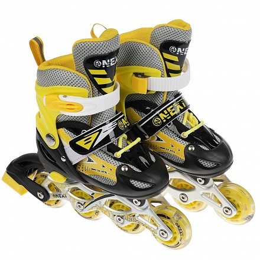
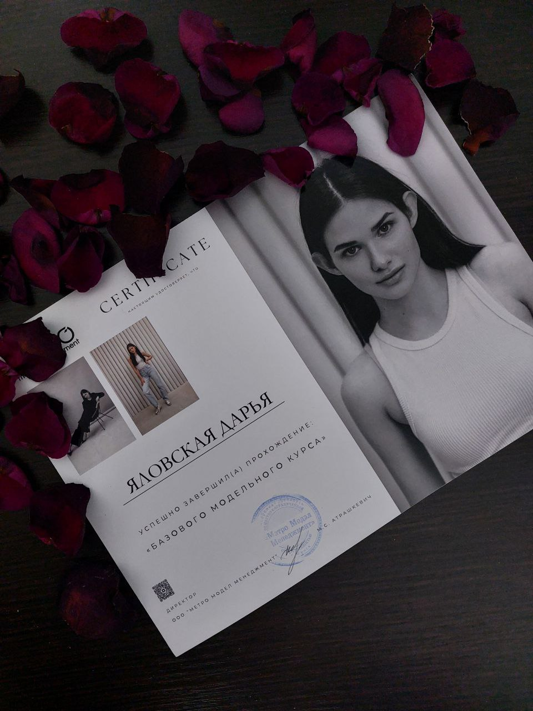
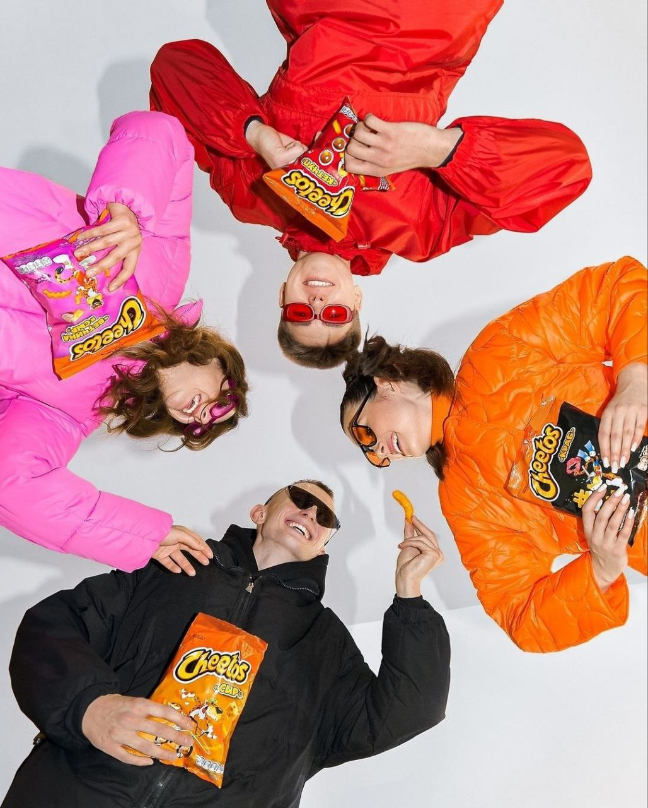
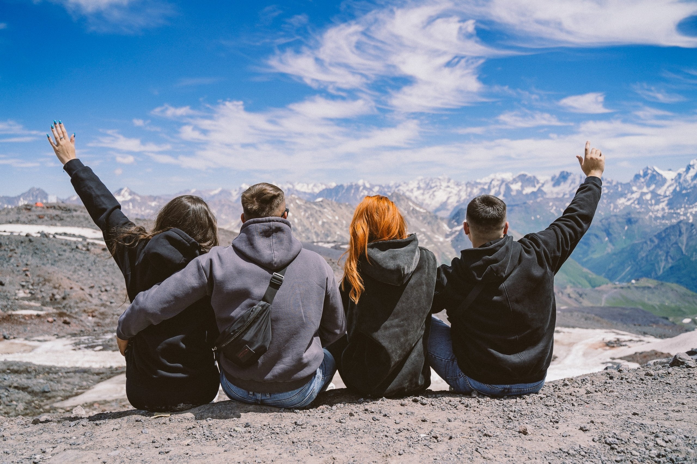
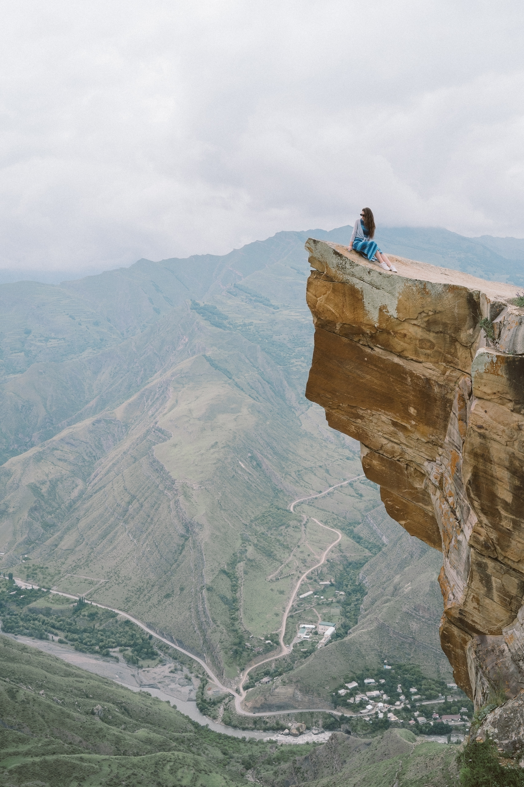

О себе

Привет! Меня зовут Даша!
Когда-то, 24 февраля 2005 года, в городе Ивацевичи родилась эта девчонка. Она как и все начинала с трехколесного велосипеда, плавала по собачьи, строила произведения архитектуры из песка... Хотела стать известной певицей, когда пела в ванной, танцовщицей, танцуя перед зеркалом, профессиональным визажистом, когда тайком красилась маминой косметикой, и модельером, создавая платья из покрывал, и еще много много кем...
Всегда в разные периоды своей жизни я увлекалась разными вещами. Это делат мою жизнь разнообразной, яркой и насыщенной.
А подробнее я расскажу только про некоторые из моих, так называемых, хобби, увлечения.
Мои хобби
-
Ролики

На мое самое 1 сентября дедушка мне подарил ролики. Не поверите кто меня учил на них кататься. И это тоже был дедушка!
Каждый день после школы я каталась на роликах. И это стало моим, можно сказать, хобби.
Но! Хобби это было пока я не докаталась с горок на них и не упала, сломав руку) Вот такое неожиданное завершение.
И сейчас я могу стать на ролики и кататься, правда это сейчас большая редкость.
Мои первые ролики -
Моделинг

Буквально с прошлого года я начала заниматься моделлингом. Я прошла курсы в модельной школе.
Мой сертификат о прохождении модельных курсов Но я решила, что связать с этим всю мою жизнь, я не хочу (мне же надо доучиться в моей Академии управления при Президенте РБ). Поэтому оставила это на уровне хобби.
Сейчас я периодически хожу моделью на сьемки, сотрудничаю с брендами.
И даже был интересный опыт сотрудничества со всем известным брендом Cheetos)
 -
Путешествия
Путешествия... ммм ... Самое любимое. Правда за спиной не так много, но все же впереди) Да?)
Путешествия открывают новые горизонты и дают возможность узнать другие культуры.
Мои путешествия, если брать заграницу, начались с Украины. Дальше Польша, Турция.


Турция Ну а вот этим летом проехала тысячи киломметров и доехала до Дагестана. Специфичный выбор? Да! Но это того стоит! Вот там-то и узнала я, что такое настоящие могучие горы.
Эльбрус Язык Тролля Сулакский каньон